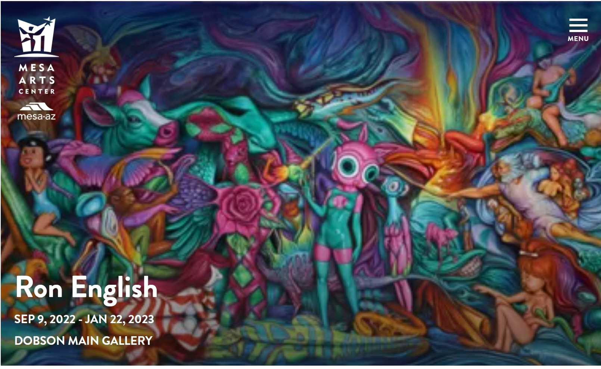
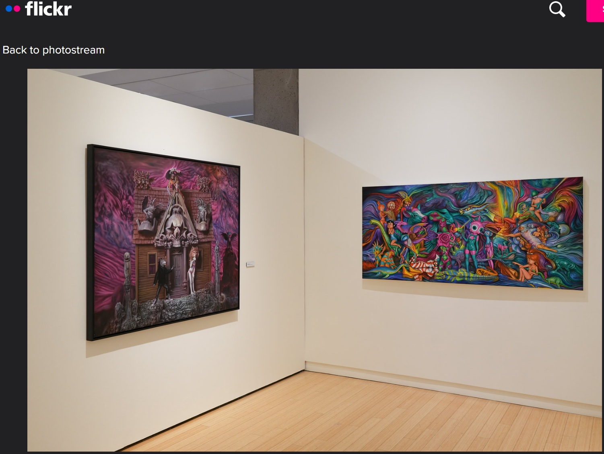

Exhibitions
TOYBOX: America in the Visuals, Corey Helford Gallery, Los Angeles, California, US, December 2–30, 2017.
Living in Delusionville, Mesa Contemporary Arts Museum, Mesa Arts Center, Mesa, Arizona, US, September 9, 2022–January 22, 2023.
Literature
Ron English, Original Grin: The Art of Ron English (Paris: Cernunnos, 2019), p. 381. ISBN 978-2374950938.
Notes
Also known as Bunnny Rabbbit, Action Surrealist.
This work appears on Corey Helford Gallery’s artwork page for the exhibition TOYBOX: America in the Visuals, available here, accessed April 11, 2026.
It also appears in L.A. TACO’s preview “Ron English ‘TOYBOX: America in the Visuals,’” published November 21, 2017, available here, accessed April 21, 2026.
It also appears in Dangerous Minds’ feature “POPaganda: New work by pop-art provocateur Ron English,” published November 29, 2017, available here, accessed April 21, 2026.
It also appears on I Support Street Art’s exhibition page for TOYBOX: America in the Visuals, available here, accessed April 21, 2026.
It also appears in G Pen’s news post “Ron English | TOYBOX: America in the Visuals,” published December 14, 2017, available here, accessed April 21, 2026.
It also appears on Mesa Arts Center’s exhibition page for Ron English, available here, accessed April 11, 2026.
It also appears in installation photographs on Mesa Arts Center’s Flickr page Living in Delusionville by Ron English | Install Images, available here, accessed April 21, 2026.
This image appears as the cover artwork for Callum Berigan’s SoundCloud track House Mix, published January 31, 2025, available here, accessed April 16, 2026.
It also appears on VeVe’s digital collectible page for Ron English’s Record #7 - Bunnny’s Rap - Original, where it is listed as a Common, First Edition digital collectible in the Delusionville Record S7 series, available here, accessed April 16, 2026.

Ancillary Documentation



